Valdecir L.G. Carvalho
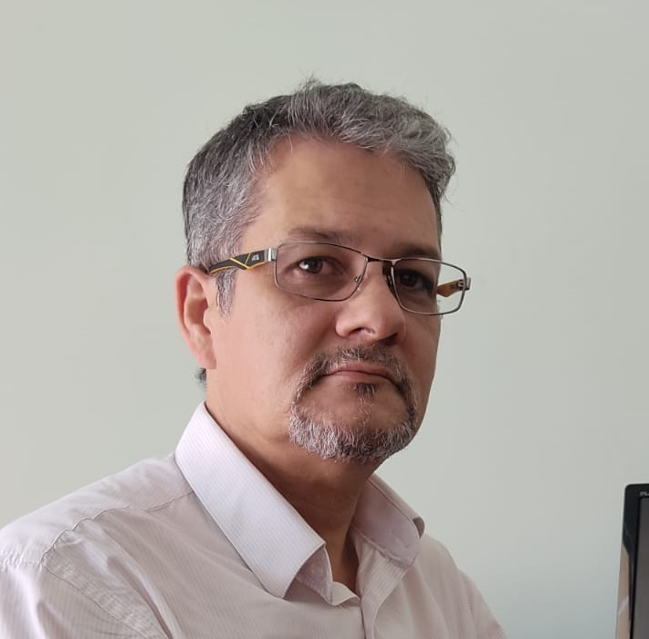
Sumary
Software Engineer with vast experience in segments like
commercial, health, industry, financial/banks and others. Skilled in
C#, Delphi, MS-SQL T-SQL, Oracle PL/SQL, Firebird, WebAPI,
Windows Communication Foundation (WCF), REST, SOAP, Microservices,
Integration services, Automation Services, WinForms, BPM,
UML, TDD, BDD, DDD.

 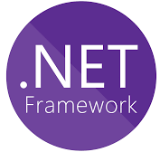
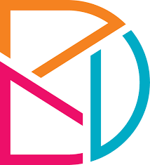
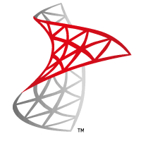
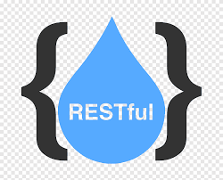
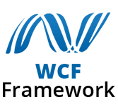
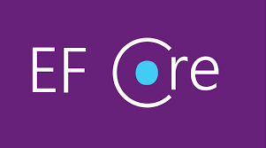
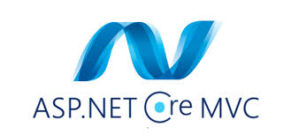
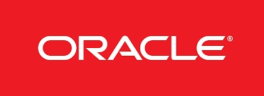
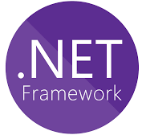
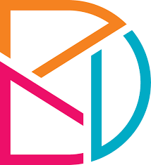
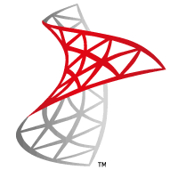
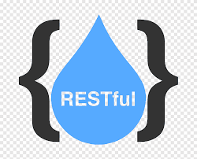
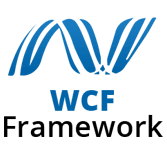
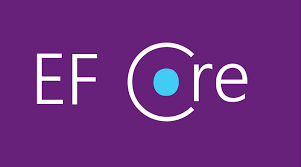
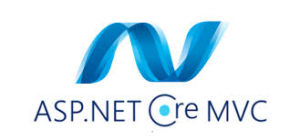
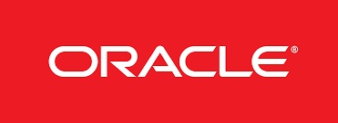
Education
- Postgradute Degree, Information System Analysis
- Bachelor of Technology - BTech, Computer Software Engineering
-
Univale
- (Februrary 1992 - November 1995)
- Associate's degree, Computer Engineering Technology/Technician
-
 Eteit
Eteit
- (February 1989 - November 1990)
Work experience
- Sequor Industrial Software
- Software Engineer
- March 2022 - June 2023 (1 year 4 months)
- Curitiba, Paraná, Brasil
- Developing and maintaining M.E.S. (Manufacturing Execution Systems) in
Industry 4.0 using IOT. Business analysis, systems analysis, programming and
systems maintenance as well as support for market strategies. Using Microsoft
technologies (C#, SQL Server, IOT, CLP).
- Villatore Informática
- Software Engineer
- June 2019 - February 2022 (2 years 9 months)
- Curitiba, Paraná, Brasil
- ERP software developer focused on the trade of auto parts. Using
technologies like Embarcadero Delphi 2010/RIO, Firebird, Windows, Linux,
Android.
- Gestran - Software para Transportes
- Software Engineer
- January 2019 - May 2019 (5 months)
- Curitiba, Paraná
- Development of ERP software aimed at the small, medium and autonomous
transport market. Using technologies like Delphi and C#.
- Instituto das Cidades Inteligentes
- Software Engineer
- April 2017 - December 2018 (1 year 9 months)
- Curitiba, Paraná
- Developer Analyst in the modules of the GTM System (Municipal Tax
Management). Using technologies like Delphi, C#, SyBase and MSSQL.
- AMcom Sistemas de Informação
- Software Engineer
- August 2016 - January 2017 (6 months)
- Blumenau, Santa Catarina
- Systems Analysis, Software Architecture, Hardware Architecture, Business
Process Modeling (BPM), Delphi Development, C++ Development, Information
Security, Function Point Analysis, UML Design. Development of multiplatform
multithreading embedded automation system in road radar.
- Corplan Tecnologia
- Software Engineer
- June 2015 - October 2015 (5 months)
- Concórdia, Santa Catarina
- Requirements analysis, systems analysis, architecture, programming,
documentation. Adaptation of existing software from small companies
(TREND) to medium companies (multi companies, multi BD, PAF/ECF/TEF).
Methodologies/Practices: OOP, TDD, APF, Relational Modeling, Scrum,
Design Patterns.
- Tools: Delphi XE 7, PostgreSQL 9.3/9.4, Firebird 2.5.
- Lion Informática
- Software Engineer
- December 2014 - April 2015 (5 months)
- Belo Horizonte, Minas Gerais
- Requirements analysis, systems analysis, architecture, programming,
documentation. Maintenance of software for notary control.
Methodologies/Practices: OOP, TDD, APF, Relational Modeling, Scrum,
Design Patterns, SOA.
- Tools: Delphi 7, Visual studio 2008/2013 (C#), Firebird 1.5/2.5.
- Global Tecnologia / Supernova Sistemas
- Software Engineer
- June 2014 - November 2014 (6 months)
- Belo Horizonte, Minas Gerais
- Systems analysis, architecture, technical leadership, programming,
documentation. Responsible for adapting all modules of the city hall control
system to the new PCASP international accounting model.
- Methodologies/Practices: OOP, TDD, APF, Relational Modeling, Agile/XP.
- Tools: Delphi 7, MSSQL, Oracle, SOA.
- Localiza
- Software Engineer
- February 2014 - April 2014 (3 months)
- Belo Horizonte, Minas Gerais
- Consultant at the service of Squadra Tecnologia. Requirements analysis,
systems analysis, architecture, programming, documentation, approval. Core
business of the new used car page of Localiza rent a car.
- Methodologies: OOP, BDD, APF, WCF, Caching, Load Balancing.
- Tools: Microsoft Visual Studio 2008, 2010, 2012, Project, PowerDesigner,
Cambanize, MSSQL 2010, among others.
- SA Informática
- Software Engineer
- April 2013 - January 2014 (10 months)
- Belo Horizonte, Minas Gerais
- Requirements survey and analysis, Systems analysis, programming,
deployment, infrastructure analysis, auditing.
- Methodologies: Scrum, OOP, TDD, BDD.
- Tools: Embarcadero Delphi XE, Borland Delphi 7, MS SQL 2008, 2010, 2012,
Siemens Pabx, Digivoice MeuCCI (asterisk).
- Arena Diversão Clube
- Software Engineer
- June 2010 - May 2012 (2 years)
- Governador Valadares, Minas Gerais
- Systems: Control of field locations, bar front, waiters, cashier, ticket office,
biometrics, turnstiles, administrative management, voip and security videos.
Among several others for internal use.
- Methodologies: OOP, APF, TDD, Windows Services.
- Tools: Delphi 7/2010, Microsoft Visual Studio 2005/2008 (C#), MS-SQL 2010,
MS-Project, among others.
- Hewlett-Packard Enterprise Services (former EDS)
- Software Engineer
- January 2010 - May 2010 (5 months)
- Lisbon, Portugal
- Consultant for HP (EDS Portugal) and Rumos (Portugal) in several projects at
Multinacional Delphi (manufacturer of automotive components).
- Methodologies: OOP, TDD, Windows Services.
- Tools: Delphi 1/3/6/7/2005/2006/2010, Microsoft Visual 6/2005 (vb,c/c+
+,C#,asp.net), MS-SQL 2000/2005, Sybase Powerbuilder, Oracle PLSql /
Forms 6 / ProCobol, HP-UX, MS-Project, among others.
- Critical Software
- Software Engineer
- November 2008 - September 2009 (11 months)
- Figueira da Foz, Coimbra, Portugal
Projects:
- Portucel / Soporcel - Management of processes / logistics.
- Portugal Telecom - Sapo messenger.
- Methodologies: Analyze OOP, TDD, BDD, XP, Design Patterns, SOA and
DAO architecture.
- Tools: Borland Delphi 7, Microsoft Visual Studio 2005 (C#), WebServices, MSSQL 2000/2005, Developer Express Suite, Enterprise Architech, IIS, Apache,
Linux, among others.
- Citibank
- Software Engineer
- February 2008 - July 2008 (6 months)
- Lisbon, Portugal
- Consultant at the service of Tecnidata (a Portuguese technology company).
- Document and rewrite several specific applications for the scope of citibank
branches in Portugal.
- Methodologies: OOP, TDD, APF, MS-WCF, MS-WWF, Windows Services.
- Tools: Microsoft Visual Studio 2005 (C#), MS-SQL 2005, MS Visio, MSProject, among others.
- Banco de Portugal
- Software Engineer
- September 2007 - January 2008 (5 months)
- Lisbon, Portugal
- Consultant at work for Novabase (a technology company from Portugal). The
"Banco de Portugal" is the "clearing house" (central bank) of Portugal.
- CRC / file import/export services module.
- Responsible for creating the clearing architecture of all banks in Portugal.
- Methodologies: OOP, APF, TDD, MS-WCF, MS-WWF, Windows Services.
- Tools: Microsoft Visual Studio 2005 (C#), MS-SQL 2005, Enterprise Architech,
among others.
- Critical Software
- Software Engineer
- December 2005 - August 2007 (1 year 9 months)
- Coimbra, Portugal
- BCP/BES - Physical file management and logistics system, Critical - Critical
Framework for .NET, Soporcel - Process management, PSA- Data printing/
export module.
- Methodologies: Analyze OOP, XP, TDD, APF, SOA and DAO architecture.
- Tools: Borland Delphi 7, Microsoft Visual Studio 2005 (C#), MS-SQL
2000/2005, Sybase, Cristal Reports, Developer Express Suite, Windows
98/2000/XP/2003, Enterprise Architech, IIS, Apache, Linux, among others.
- Suprema Informática
- Software Engineer
- May 2005 - September 2005 (5 months)
- Belo Horizonte, Minas Gerais
- Legal Management Systems.
- Methodologies: Structured analysis, essential analysis, function point analysis,
Project Management, MultiThread and Multi-Layer MIDAS architecture, VBA,
ActiveX, DCOM.
- Tools: Borland Delphi 7, Firebird, MS-SQL, Oracle, Report Builder Enterprise,
Windows 98/2000/XP/2003, Linux, among others.
- Lachmann Group
- Software Engineer
- November 2004 - February 2005 (4 months)
- Santos, São Paulo
- Adaptation of EADI software to new federal standards for bonded terminals.
- Methodologies: Structured analysis, essential, UML, PMI bases, function point
analysis, MultiThread architecture and Multi-Layer MIDAS.
- Tools: ErWin, ModelMaker, Delphi 7, PL/SQL, Oracle, Crystal Reports, Visual
Source Safe, Crystal Reports, Windows 2000/XP, among others.
- Usina Alta Mogiana S/A Açúcar e Álcool
- Software Engineer
- March 2004 - October 2004 (8 months)
- São Joaquim da Barra, São Paulo
- Integrated solution for the legal, administrative and accounting industry sector.
- Methodologies: Structured analysis, essential, UML, PMI bases, function point
analysis, Project Management, Team Management, MultiThread architecture
and Multi-Layer MIDAS.
- Tools: Rational Rose, Model Maker, MS-Visio, MS-Project, Delphi 7, PL/SQL,
Oracle, Firebird, I.I.S., Apache, Team Source, Windows 2000/98/XP, among
others.
- Prosegur
- Software Engineer
- January 2004 - February 2004 (2 months)
- Belo Horizonte, Minas Gerais
- Consultant at Stefanini's service. Lead a team to develop benefit control
systems on hybrid platforms on an international intranet.
- Methodologies: Structured analysis, essential, UML, PMI bases, function point
analysis, Team Management, MultiThread architecture and Multi-Layer COM+.
- Tools: MS-Visio, MS-Project, Visual Basic 6, PL/SQL, Oracle, MS-SQL, PL/
SQL Developer, Visual Source Safe, Windows 2000/XP/2003, AIX, among
others.
- Telemig Celular
- Software Engineer
- August 2003 - December 2003 (5 months)
- Belo Horizonte, Minas Gerais
- Maintenance and operation of mobile telephone systems in the areas of traffic/
mediation, invoicing, bank reconciliation, logistics. CRM eintegration.
- Methodologies: Structured analysis, essential analysis, function point analysis,
Project Management, MultiThread and Multi-Layer MIDAS architecture, ASP,
VBA, ActiveX.
- Tools: ErWin, MS-Project, Borland Delphi 5 and 6, Oracle, MS-SQL, PL/SQL
Developer, Source Control Serena, SUN-Solaris, Windows NT/2000, among
others.
- SA Informática
- Software Engineer
- December 2002 - July 2003 (8 months)
- Belo Horizonte, Minas Gerais
- Systems for secondary, higher and specific education institutions, libraries and
commerce.
- Methodologies: Structured analysis, essential analysis, function point analysis,
Project Management, MultiThread architecture and Multi-Layer MIDAS, VBA,
ActiveX, DCOM.
- Tools: Borland Delphi 6 and 7, Firebird, MS-SQL, Oracle, Report Builder
Enterprise, Crystal Reports, Kylix, Windows 98/2000/XP/2003, Linux, among
others.
- Netminas Informatica (closed)
- Senior Software Development Engineer
- October 1992 - October 2002 (10 years 1 month)
- Governador Valadares, Minas Gerais
- Management, analysis, development and maintenance (Projects: management
and production systems for hospitals, factories, libraries, pharmacies. Logical
and physical structuring of hybrid networks (heterogeneous and homogeneous
from various platforms). Team and project management).
- Methodologies: Structured analysis, essential, OO, UML, Function point
analysis, Project management (PMI/PMP), MultiThread and Multi-Layer
MIDAS architecture, ASP, VBA, ActiveX, DCOM, COM+, WebServices, Soap,
XML.
- Tools: Borland Delphi 1 to 5, Visual Basic 4 to 6, MS-Access, CA-Clipper
(Summer to 5.3), FoxPro, Visual FoxPro, Visual Objects, C/C++, Pascal, Basic
(DOS), among others.
- Embratel
- Software Engineer
- January 1992 - September 1992 (9 months)
- Governador Valadares, Minas Gerais
- Software maintenance to support the telephone field maintenance team in the
national network.
- Multi-user, Multi-thread. SCO-UNIX, FoxBase-UNIX, Word, among others.
Skills
Computer Languages
- Delphi (VCL e FMX) - 25 years
- C# .NET 7.0, .Net Framework, ASP.NET Core MVC, WCF, WWF, WPF, ASP.NET, WebAPI - 18 years
- PL/SQL e T-SQL - 14 years
- Visual Basic 6 - 6 years
- C/C++ - 1 year
Methodologies
- Strutured Analysis, Object Oriented (UML) - 20 years
- Functional Analysis (UML / BPMo) - 4 years
- Agile, Scrum, Waterfall, XPO - 10 years
- SOLID, Clean Code - 4 years
Tools
- Erwin,Doctor Case,Power Designer,Rational Rose,Model Maker - 4 years
- MS Visio,Visual Source Safe,Team Source - 6 years
- Report Builder Enterprise, Crystal Reports - 2 years
- PL/SQL Developer - 6 years
- SQL Navigator - 4 years
- SVN, CVS - 10 years
- TFS, GIT - 4 years
Databases
- Oracle - 8 years
- Microsoft SQL Server - 20 years
- Firebird / Interbase - 6 years
- Sybase - 1 year
- MS-Access, Paradox - 6 years
- PostgreSQL - 2 years
- ISAM/XBase - 16 years
Achivements
Certifications
Additional Information
Training in progress
Social Media